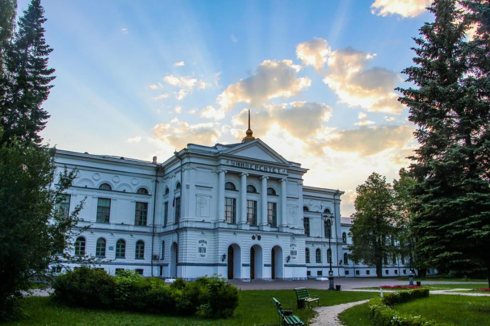
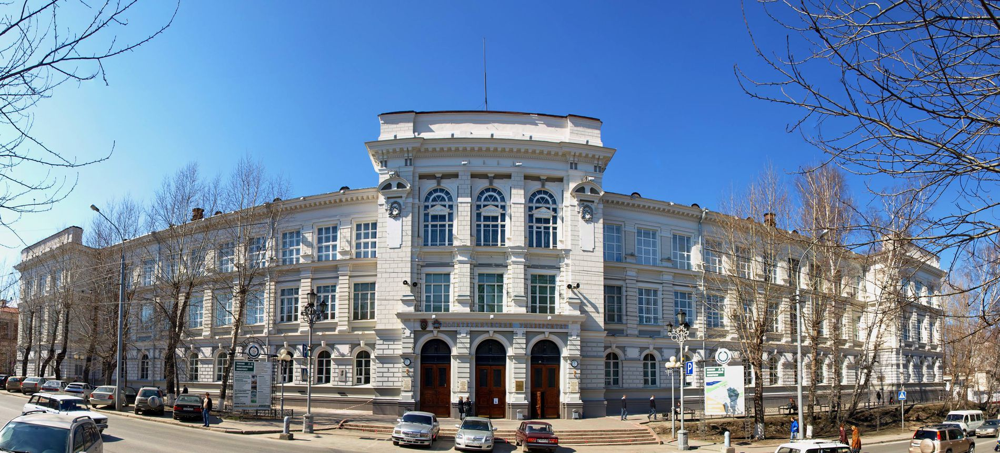
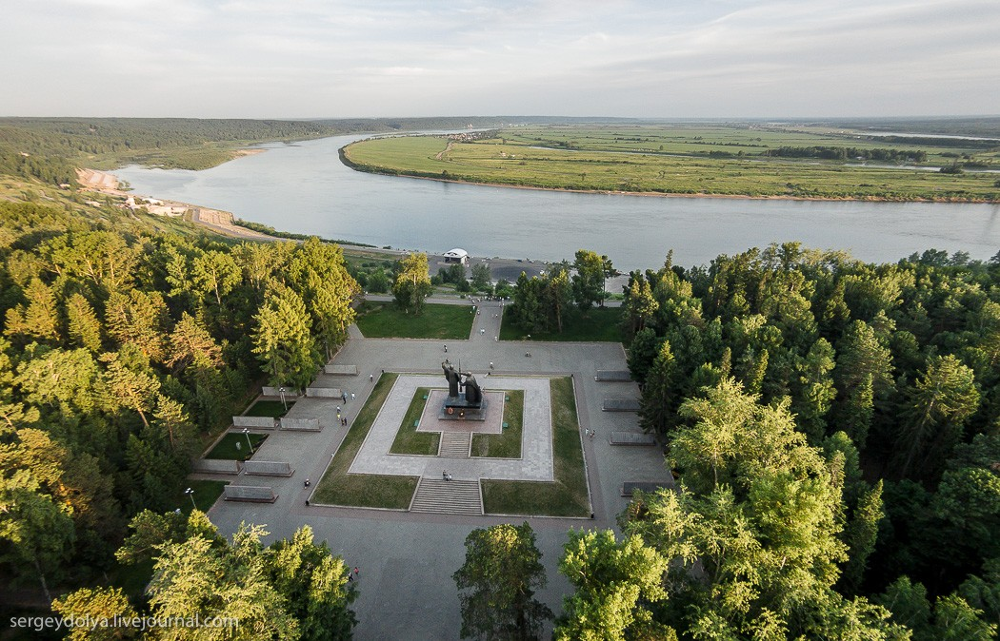
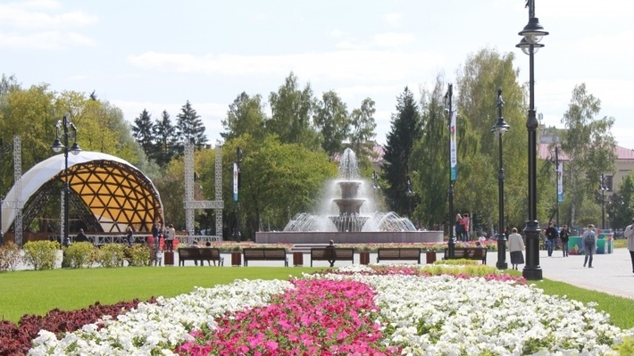
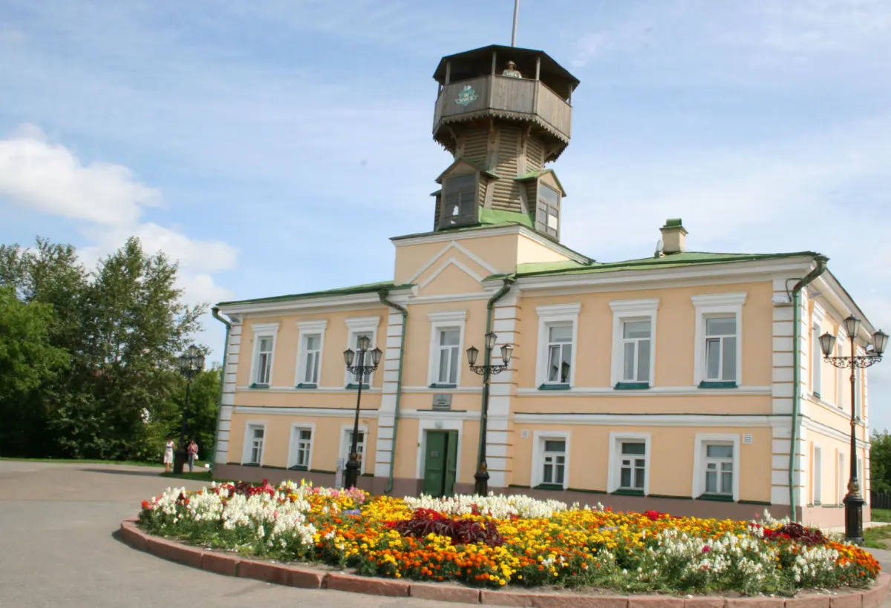

Томский государственный университет
Первый университет Сибири, основанный в 1888 году. Архитектурный памятник и научный центр региона.

Томский политехнический университет
Один из старейших технических вузов России. Первое высшее учебное заведение Сибири в техническом направлении.

Лагерный сад
Парк в Кировском районе Томска, на высоком правом берегу Томи, в оползневой зоне.

Площадь Ново-Соборная
Место притяжения горожан. Здесь расположен ухоженный парк, поющий фонтан. Излюбленное место проведения массовых, городских мероприятий.

Сельский парк Околица
Парк музей под открытым небом вблизи города Томска. Здесь проводится международный конкурс "Праздник Топора"- конкурс плотников и скульпторов по дереву.

Музей истории Томска
Музей расположен на Воскресенской горе, на месте основания г. Томска.